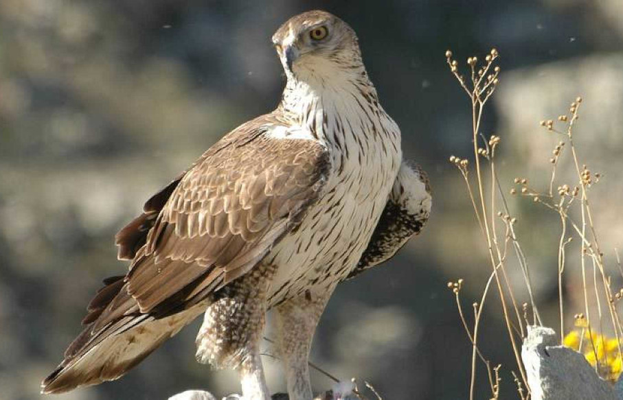

Top 3 animales en peligro de extinción
Fartet

Población: Decreciente
Conservación: En peligro
Águila perdicera
Población: Disminuyendo
Conservación: Preocupación menor
Cernícalo primilla

Población: Mejorando
Conservación: Preocupación menor